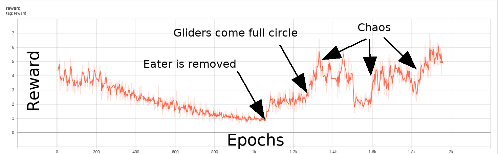

Intrinsic motivation

Intrinsic motivation: random network distillation (
Burda et al. 2019
)
Other intrinsic motivation schemes: autoencoder loss, direct prediction (subject to noisy tv problem) ....
Previous
--
Table of Contents
--
Next